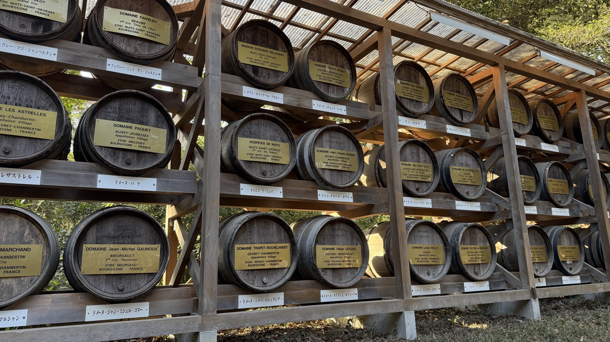
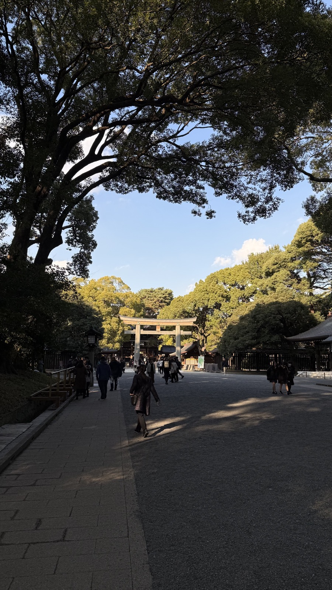
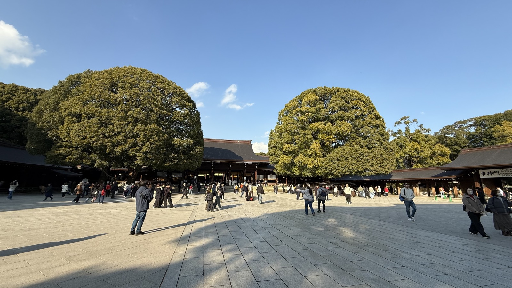
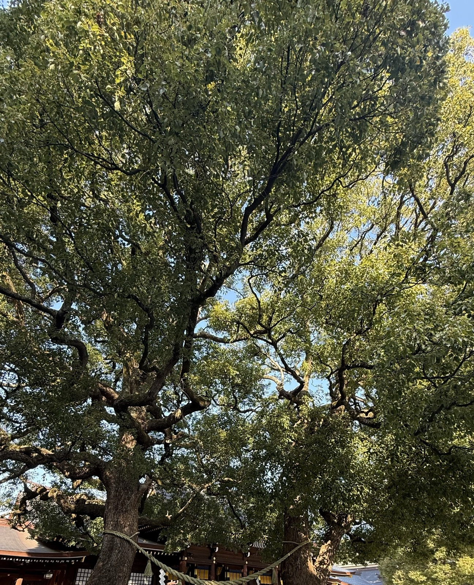
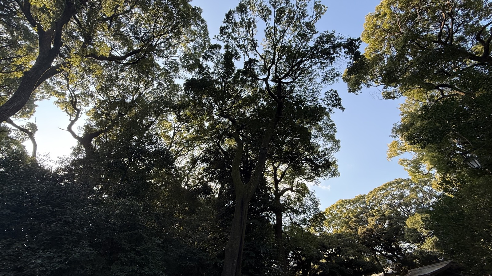

由緒・創建
大正9年（1920）、明治天皇と昭憲皇太后を祀る神社として創建。鎮座地一帯はもともと荒地に近い状態だったが、全国から奉献された約10万本・365種の樹木を計画的に植林し、100年後を見据えた人工の森として造成された。
現在は自然林とほとんど見分けがつかないほどに生育し、「代々木の杜」と呼ばれる都市林の代表例になっている。

参道の入口にそびえる大鳥居。台湾産ヒノキで作られている。

境内に並ぶ、フランス・ブルゴーニュから奉納されたワイン樽。「和魂洋才」を掲げた明治天皇の御精神を今に伝える。
見どころ
JR原宿駅からすぐの大鳥居（高さ約12m、台湾産ヒノキ材）をくぐり、参道の先に南神門・本殿が現れる。明治神宮御苑には縁結びのパワースポットとして知られる「清正井」もある。

大きく張り出した枝の向こうに、参道の鳥居が小さく見える。

南神門をくぐった先に本殿が現れる。夫婦楠越しに望む、境内でもっとも開けた広場。
参拝のポイント
初詣の参拝者数は例年日本一を記録する。都心にありながら鎮守の森に包まれ、原宿・渋谷の喧騒から一歩入るだけで静寂な空間に変わる。週末は境内で神前式の花嫁行列に出会えることも多い。
JR「原宿駅」または東京メトロ「明治神宮前〈原宿〉駅」から徒歩約1分。参道は本殿まで片道約10分あり、御苑（清正井）に立ち寄る場合は別途拝観料が必要。

2本の楠を注連縄で結んだ「夫婦楠」。縁結びの象徴として親しまれる。

100年をかけて育った杜の梢。都心とは思えない木漏れ日が差し込む。
文化的背景
「都市の中の鎮守の森」という近代神社の代表例。祭神が近代の天皇であるという点で、古代から続く神々を祀る伊勢神宮などとは成り立ちが異なる、明治という時代そのものを象徴する神宮といえる。

全国の蔵元から奉納された酒樽が参道脇に並ぶ、明治神宮ならではの光景。